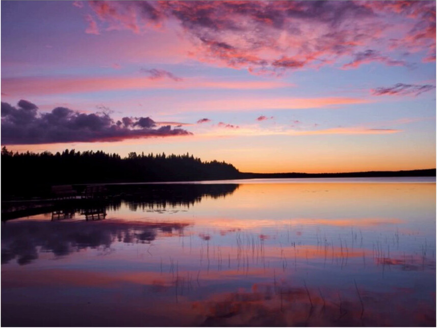

Generative art
Step one

Ten colours, ranked by how much of the photo they cover.
Style one
A calm grid of coloured dots.
Style two
30 turtles · right-angle turns · trails of colour.
Style three
Huge overlapping arcs in thick strokes.
Under the hood
sidebar, sliders, preview
animated, step by step
colours from any photo
Code that paints.
Built by Leo Suzuki · leosuzu.com